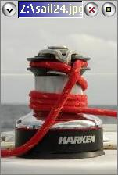

GBMV is a fast and simple bitmap viewer for the OS/2 and eComStation Presentation Manager. It directly uses GBM.DLL and thus can show all bitmap file formats supported by it.
Bitmaps will be show in original size only. Zooming in or out is not yet supported. GBMV can use error-diffusion or halftoning to improve the quality of image display.
usage: gbmv [-e] [-h] [--] "\"fn.ext\"{,opt}"
flags: -e error diffuse
-h halftone
-e and -h not allowed together
fn.ext{,opt} input filename (with any format specific options)
Bitmap when ext in [BMP VGA BGA RLE DIB RL4 RL8]
GIF when ext in [GIF]
PCX when ext in [PCX PCC]
TIFF when ext in [TIF TIFF]
Targa when ext in [TGA VST AFI]
ILBM when ext in [IFF LBM]
YUV12C when ext in [VID]
Bit-map when ext in [PBM]
Greymap when ext in [PGM]
Pixmap when ext in [PPM]
Anymap when ext in [PNM]
KIPS when ext in [KPS]
IAX when ext in [IAX]
XBitmap when ext in [XBM]
Sprite when ext in [SPR SPRITE]
PSEG when ext in [PSE PSEG PSEG38PP PSEG3820]
GemRas when ext in [IMG XIMG]
Portrait when ext in [CVP]
PNG when ext in [PNG]
JPEG when ext in [JPG JPEG JPE]
opt bitmap format specific option to pass to bitmap reader
In case the filename contains a comma or spaces and options need to be added, the syntax "\"fn.ext\"{,opt}" must be used to clearly separate the filename from the options.
| Main window: |  |